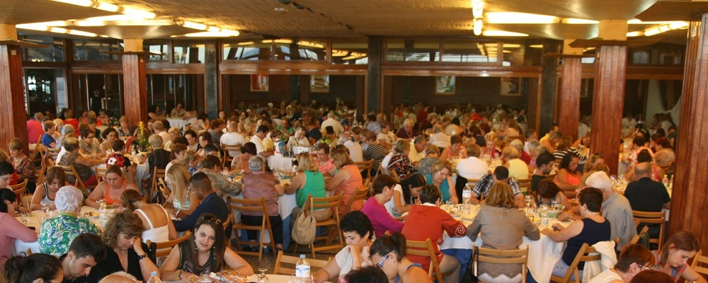

{% extends "app/layout.html" %}

{% block content %}
    &nbsp;
	<div class="row">
		<div style="width: 1000px;margin:0 auto;">
			<div style="margin-bottom:10px;">
				<div id="myCarousel" class="carousel slide" data-ride="carousel">
					<!-- Indicators -->
					<ol class="carousel-indicators">
						<li data-target="#myCarousel" data-slide-to="0" class="active"></li>
						<li data-target="#myCarousel" data-slide-to="1"></li>
					</ol>
				
					<!-- Wrapper for slides -->
					<div class="carousel-inner">
						<div class="item active">
							
							<div class="carousel-caption">
								<h3>Bingo</h3>
								<p>Gracias a los que asistieron!</p>
							</div>
						</div>
					
						<div class="item">
							
							<div class="carousel-caption">
									<h3>Maquinas Geriatricas</h3>
									<p>Sera para el 2019!</p>
								</div>
						</div>
					
					</div>
				
					<!-- Left and right controls -->
					<a class="left carousel-control" href="#myCarousel" data-slide="prev">
					<span class="glyphicon glyphicon-chevron-left"></span>
					<span class="sr-only">Previous</span>
					</a>
					<a class="right carousel-control" href="#myCarousel" data-slide="next">
					<span class="glyphicon glyphicon-chevron-right"></span>
					<span class="sr-only">Next</span>
					</a>
				</div>
			</div>
            <div style="float:left;">
			    <iframe src="https://www.google.com/maps/embed?pb=!1m18!1m12!1m3!1d2819.0471318252808!2d-79.89353246973545!3d-2.252788530027778!2m3!1f0!2f0!3f0!3m2!1i1024!2i768!4f13.1!3m3!1m2!1s0x902d6f9156ce1fe7%3A0xbecdcf2be54a3d83!2sCiudadela+Las+Tejas%2C+Guayaquil!5e0!3m2!1sen!2sec!4v1538100370599"
					    width="500" height="600" frameborder="0" style="border:0" allowfullscreen></iframe>
            </div>
			<div style="float:left;">
				<div>
			        <iframe width="500" height="200" src="https://www.youtube.com/embed/7MdkvPPk3ow" frameborder="0" 
                            allow="autoplay; encrypted-media" allowfullscreen></iframe>				
				</div>
				<div>
					<a class="twitter-timeline" data-width="500" data-height="400" href="https://twitter.com/Guayaquil_alDia?ref_src=twsrc%5Etfw">Tweets by Guayaquil_alDia</a> 
                    <script async src="https://platform.twitter.com/widgets.js" charset="utf-8"></script>
				</div>
				
			</div>
		</div>
	</div>

{% endblock %}
